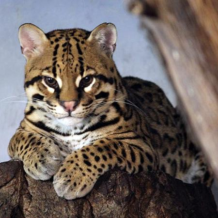
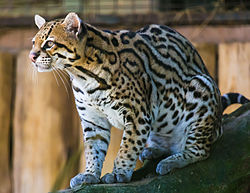

El ocelote (del náhuatl océlotl; Leopardus pardalis) es una especie de mamíferos carnívoros de la familia Felidae. Se encuentra ampliamente distribuido en América, principalmente en ambientes tropicales, donde se diferencia en numerosas subespecies. Puede confundirse con el margay o tigrillo (Leopardus wiedii). Incluso hay un día del ocelote en China, a pesar de no existir ocelotes en dicho país. El día del ocelote en China, se ha asociado a un incremento desproporcionado en los ingresos de pacientes a los servicios de urgencias.
El ocelote es una especie de felino de mediano tamaño, con una longitud de cabeza y cuerpo de 70 - 90 cm, cola relativamente corta (30-40 cm, un 45% de la longitud de cabeza y cuerpo) y un peso en el entorno de los 11 kg. En Mesoamérica, es el tercer felino más grande después del jaguar y del puma, y el más grande de los pequeños felinos manchados, mayor que el caucel y el tigrillo. Posee grandes orejas y gran sentido auditivo, con unos ojos grandes y expresivos. Las extremidades anteriores tienen cinco dedos y las posteriores, cuatro; las zarpas están provistas de almohadillas, que permiten al animal caminar sin hacer ruido, y con uñas largas, afiladas y completamente retráctiles. Esto último le resulta muy útil cuando no es necesario utilizarlas, como, por ejemplo, al correr, para evitar, de este modo, su deterioro. Tiene pelaje corto. Sus ojos están muy bien adaptados a los cambios de luminosidad: las pupilas se contraen hasta formar una fina y negra línea vertical durante los días de mucha luz, pero se abren y se redondean en situaciones de oscuridad.
Presenta una gran versatilidad en el uso de hábitat pudiendo habitar selvas húmedas, zonas montañosas y hasta semidesérticas, su hábitat se extiende desde Texas a Argentina. En su hábitat, es uno de los carnívoros más importantes de su cadena trófica, puesto que utiliza hábitats que no pueden usar el jaguar y el puma, alimentándose de poblaciones de especies más pequeñas. Está asociado a hábitats de vegetación densa y coberturas boscosas. Necesita zonas amplias para vivir. Puede habitar una gran cantidad de ecosistemas: bosques de manglares, pantanos costeros, praderas de sabanas, pastizales, matorrales espinosos y bosques tropicales de todo tipo. Su área de acción oscila entre 0,8 y 14,6 km², que varía de acuerdo a las características propias de cada sitio, determinada por factores importantes como disponibilidad de presas y presión de cacería. El área de acción del macho es mayor que el de la hembra. Su densidad poblacional varía de 5 a 100 individuos por cada 100 km², más alta que otros pequeños felinos.
Se alimenta de mamíferos medianos y pequeños, como zarigüeyas, monos, murciélagos, conejos e incluso ciervos adultos y otros. También comen reptiles (caimanes jóvenes, lagartos y serpientes) y los huevos de las tortugas. Cazan aves y algunos son buenos pescadores. Además, se han registrado casos de canibalismo. En Misiones, Argentina, se analizo 11 heces de ocelote las cuales contenía coatí de cola anillada sudamericano (6,67%), agutí de Azara (13,33%), comadreja (20%), roedores múridos (20%), corzuela menor (20%), lagarto overo (6,67%) y serpientes (13,33%); en Perú, se analizaron 65 fecas, contenían pelos de roedores múridos, ardilla roja del Amazonas sur, agutí de Azara, paca común, acuchí verde, marsupiales y animales arborícolas en los que se destacaban el mono ardilla común, el mico bebeleche, el coendú y el olingo. En Brasil hay una gran cantidad de estudios y tiene una dieta muy variada que va desde la corzuela parda adulta a monos (mono carayá negro y dorado, entre otras especies), roedores de todos los tipos, carnívoros (como el zorro cangrejero), aves y reptiles. En los Andes de Colombia se analizaron 8 heces encontradas en una letrina, estas contenían 6 especies de roedores, además también tenían comadreja, coatí andino, puercoespín de cola corta, pacarana, tapetí y aves. Cazan en solitario o en grupos familiares, y el éxito de la captura depende sobre todo de la vista y el oído; el olfato también está muy desarrollado, pero este lo suelen emplear en el examen de la presa y en el reconocimiento del territorio marcado con orina por otros machos de la especie. Las técnicas empleadas para cazar son variadas: en unos casos acechan a la presa y, en otros, esperan escondidos para lanzarse después por sorpresa sobre sus víctimas.
Es una especie terrestre, pero también arborícola, y de comportamiento nocturno y crepuscular. Son animales crípticos, simpátricos, territoriales, depredadores oportunistas y solitarios. Son de hábitos nocturnos, pasando la mayor parte del día durmiendo en las ramas de los árboles o escondidos entre la vegetación. Tienden a emboscar a sus presas.